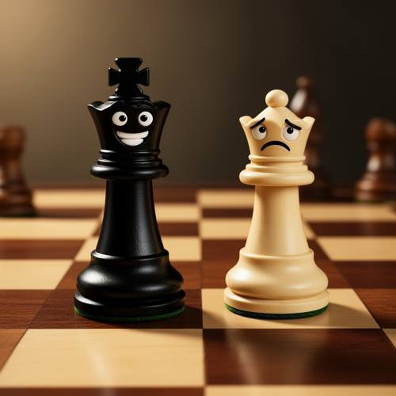
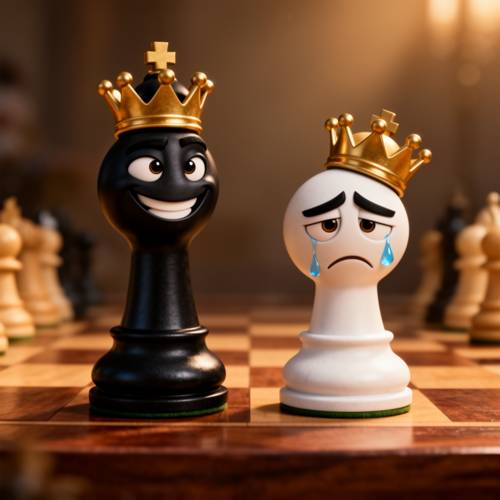

Attribute — On the chessboard, the black king chess piece was smiling proudly, and
On the chessboard, the black king chess piece was smiling proudly, and beside it was a sad white king chess piece. The game was decided.

Direct — one call, no iteration

Continuum — Qwen3.8-27B + FLUX.2-dev
Judge — Direct
PASSAttribute - Expression — The black chess piece has a face with wide-open eyes and a large, white, upturned smile, conveying a proud or happy expression. The white chess piece has a face with downturned eyebrows and a downturned mouth, conveying a sad expression.
FAILRelationship - Similarity — The prompt requires two king chess pieces. The image shows one black king chess piece, identifiable by the cross on its top. However, the white chess piece is a queen, identifiable by its coronet-style crown, not a king.
PASSWorld Knowledge — The image correctly depicts a wooden chessboard with alternating light and dark brown squares. It also correctly depicts a black king chess piece, which is a standard piece in the game of chess.
Judge — Continuum
PASSAttribute - Expression — The black chess piece is depicted with a wide, toothy grin and raised eyebrows, conveying a proud smile. The white chess piece has downturned eyebrows, a frowning mouth, and teardrops under its eyes, clearly showing a sad expression.
PASSRelationship - Similarity — The image features two chess pieces, one black and one white. Both are identifiable as king pieces due to their shape and the golden crowns with a cross on top that they both wear. This fulfills the requirement of showing two similar 'king chess piece' entities.
PASSWorld Knowledge — The scene is set on a standard chessboard with alternating light and dark brown squares. The two central figures are clearly recognizable as king chess pieces, characterized by their shape and the crowns topped with a cross, which aligns with common knowledge of the game of chess.
What the agent did
Thinking
The user wants an image: on the chessboard, the black king chess piece is proudly smiling, and next to it is a sad white king chess piece. The game was decided (checkmate). So I need to depict two anthropomorphized chess kings — a happy/smiling black king, and a sad white king — on a chessboard, with a "game over" mood. Let's generate the image with flux2-dev. Prompt idea: "Close-up on a wooden chessboard, an anthropomorphized black king chess piece standing tall with a proud beaming smile, sharp cartoonish eyes, and a small crown. Right beside it, a sad white king chess piece with droopy eyebrows, downturned mouth, and a tear in its eye. Dramatic lighting, warm studio light, shallow depth of field, 3D render style, cinematic." The two kings should be near the center of the board, as if facing each other or standing side by side. "The game was decided" suggests checkmate — the black king is victorious, the white king is defeated. Let's generate it.
Step 1 — `generate_image`
{
"prompt": "Cinematic 3D render on a wooden chessboard: an anthropomorphic black king chess piece standing upright with a proud, beaming smile, confident sharp cartoon eyes and a golden crown, chin lifted. Right beside it stands a sad white king chess piece with drooping eyebrows, a downturned frown, and a single tear rolling down its face, slumped posture, crown slightly tilted. Dramatic warm lighting, shallow depth of field, other chess pieces softly blurred in the background, cozy storybook atmosphere.",
"model": "flux2-dev"
}
Result img_0
Thinking
The result looks really good. The black king is smirking confidently, and the white king is crying with a sad face, with a drooping eyebrow and a tear. Both have golden crowns with crosses. In the background, other chess pieces are blurred out. This matches the prompt very well. Let me look more closely to check the details. The black king's smile is a proud smirk, the white king has a tear and a sad face. This seems to have captured the "game is over" atmosphere. I'll mark this as the best. The image seems complete and matches the prompt. I could check the crop of the face, but from what's displayed it already looks pretty good. This is a good result.
Step 2 — `mark_best`
{
"image": "img_0",
"reason": "Both kings render correctly: the black king smirks proudly with a golden crown, the white king sags with drooping brows and tears, on a chessboard with blurred pieces behind \u2014 matching the prompt fully."
}
Thinking
The image is good. The black king is smugly grinning, and the white king is crying, looking dejected. Both are wearing golden crowns. The background has blurred-out chess pieces and a warm bokeh effect. All the elements of the prompt are in place. This is a good enough stopping point.
Model
The scene is ready: the black king stands with a proud, smug grin, chin up under his golden crown, while the sad white king beside him droops, frowning with tears rolling down its face — the checkmate made literal. The warm, shallow-focus lighting and the blurred rows of pieces behind them sell the "game over" mood. I've marked this as the best result.